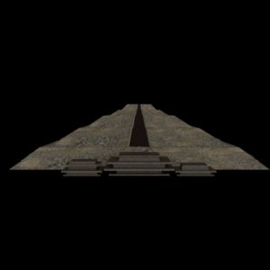
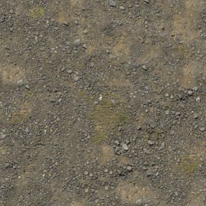
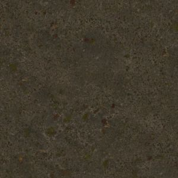
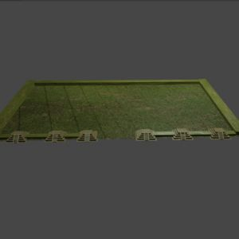
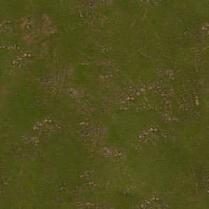
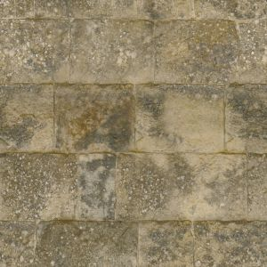

Este proyecto es un modelado q esta basado en las piramides de teotihuacan, el cual nos pideieron hacer en la escuela, y en el que somos 5 personas que participamos, y el proyecto final es hacer un recorrido virtual y hacer quese pueda proyactar en realidad aumentada.

Modelado de Piramide del sol
Este fue uno de los modelados q me pidieronhacer y el cual tambien texturize, me tomo al rededor de unos 3 a 5 dias ya que fueron aproximadamente dos dias de hacer el modelado,en el primer dia basicamente lo acabe y en elsegundo solo le agregue detalles extras.

Textura del Modelado
Esta es la textura que utilice para la piramide, solo para la piramide, la cula se llama rock_gorund_02y esta textura fue descragada desde la pagina de PolyHaven.

Textura del Modelado
Esta es la textura fue utilizada para las otras estructuras, se llama coast_sand_05 y tambien fue descargada de la pagina PolyHaven.

Modelado de la Ciudadela
En este caso yo no fui quien modelo la ciudadelafue otro de mis compañeros de equipo pero yo fuiquien la texturizo por completo y tambien le puse el pasto realista que se puede ver.

Textura del Modelado
Esta textura fue utilizada para las columnas de los laterales y tambien para lo que vendria siendo el suelose llama rocky_terrain_02 y tambien fue descargada de la pagina PolyHaven.

Textura del Modelado
Esta textura fue utilizada para las piramides la cual se llama lardge_sanstone_bloscks_01 y tambien fue descargada de la pagina PolyHaven.